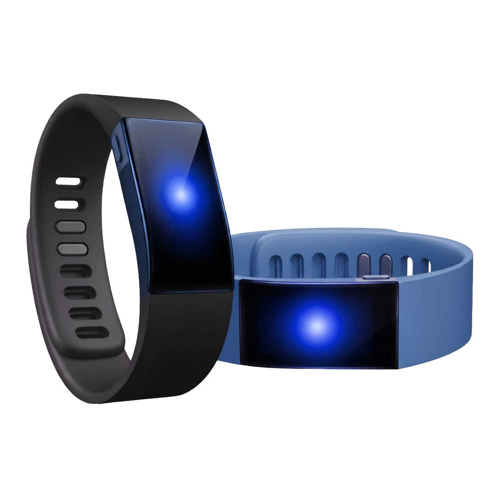

SOCIAL WEARABLE
Chạm đúng người
Chạm đúng lúc

BỐI CẢNH XÃ HỘI
CÔ ĐƠN GIỮA THỜI ĐẠI SỐ
- Trong kỷ nguyên số, khi mạng xã hội ảo lên ngôi, người trẻ lại càng dễ rơi vào trạng thái cô đơn giữa đám đông.
- Theo WHO, 16% dân số thế giới từng trải qua cô đơn, biến đây thành vấn đề sức khỏe cộng đồng toàn cầu.
- Nghịch lý là sự cô lập gia tăng giữa thời đại công nghệ. Ví dụ như ứng dụng Sileme ở Trung Quốc chuyên gửi cảnh báo nếu người sống một mình không xác nhận an toàn.
VẤN ĐỀ CỦA GEN Z
NỖI SỢ SỰ GƯỢNG GẠO
- 53% sinh viên gặp khó khăn khi bắt chuyện với người lạ ở nơi đông người.
- 69% bày tỏ mong muốn có công cụ nhận diện người chung sở thích để dễ kết nối.
- Theo đại diện Công ty Mộc Phát: "Rào cản lớn nhất của các bạn trẻ là nỗi sợ sự gượng gạo, dẫn đến việc chọn cách an toàn nhất là cắm mặt vào điện thoại".
- Giải pháp: EMORA LINK đóng vai trò như 1 chất xúc tác giúp giảm rào cản tâm lý ban đầu.
📊 Nhấn vào đây để xem toàn bộ khảo sát